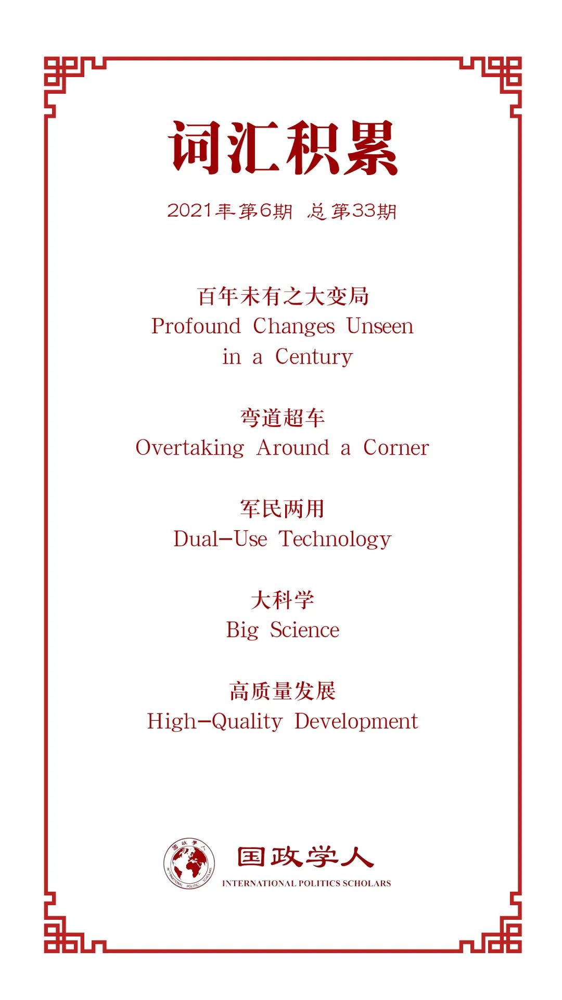

收录于合集

作品简介
【作者】 Elsa B. Kania，新美国安全中心技术和国家安全项目的兼职高级研究员，研究重点是美中关系、中国的军事战略、国防创新和新兴技术。她还为美国空军的中国航空航天研究院的项目工作，同时也是澳大利亚战略政策研究所国际网络政策中心的非常驻研究员。
【编译】 王芷汀（国政学人编译员，约翰霍普金斯大学保罗尼采高级国际关系研究院）
【校对】 李月云
【审核】 李博轩
【排版】 石寒冰
【美编】 李九阳
【来源】 Kania, Elsa B.. “China’s Drive for Innovation within a World of Profound Changes.” Asia Policy 28 (2021): 17 - 31.
【归档】 《国际关系前沿》2021年第6期，总第33期。
期刊简介
《亚洲政策》（ Asia Policy ）是美国国家亚洲研究局（NBR）的同行评审学术期刊，介绍与亚太地区政策相关的学术研究，并得出对当今决策者有用的清晰简洁的结论。该期刊发表同行评审的研究文章和政策论文、政策相关主题的圆桌会议、最近的出版物和书评论文等。
**China’s Drive for Innovation within a World of Profound Changes ******
中国在深刻变化的世界中的创新驱动力
Elsa B. Kania
内容摘要
本文考察了中国国家发展战略中的创新驱动力，并探讨了中国在保持相关科学技术的控制权和自主权与成为这些领域的全球领导者之间所面临的紧张局势。
主要观点
中国认为，世界正经历的“百年未有之大变局”，部分是因为科学技术的快速进步。新冠肺炎大流行深刻影响了这些变化，并加剧了对当前全球秩序的破坏。这对于中华民族复兴进程来说，既是挑战，也是机遇。中国正加快崛起的步伐，“十四五”规划强调了培育创新能力和利用科学技术实现这一目标的能力。然而，实现这一目标的进展并不均衡。尽管中国渴望成为新的科技“高地”，但中国创新技术走向世界的能力可能因缺乏信任和透明度而被削弱。如果中国确实在第四次工业革命过程中成为创新领域的领导者，这种转变可能对未来的均势产生重大影响。
政策意义
中国的创新力驱动将继续面临某些不协调。尽管中国在开放科学的世界中崛起并从中受益，但地缘政治环境中的激烈竞争正在使这一范式复杂化。
中国及其科技公司已经显示出越来越强的技术实力（例如，在应对新冠肺炎大流行方面），但在关键领域（例如半导体）方面仍面临技术障碍，而这些障碍是其发展的瓶颈。
如果美国要保持其在科技领域的传统领先地位，就需要对国内创新进行振兴和再投资。
文章导读
中国认为，世界正经历“百年未有之大变局”，在此条件下必须实现民族复兴。这一决心已成为中国外交和当前国际环境展望的核心要素。这些深刻变化暗示着权力平衡的历史性转变。中国想要在新的创新领域占据全球领导地位，且已经瞄准了某些科学技术领域，在这些领域美国可能不具备或无法保持传统优势，进而中国能够朝着“弯道超车”的方向前进。事实上，创新已被视为当今大国竞争不可或缺的一部分。
01
**** 中华民族复兴中的创新
创新已成为中国国家战略的重中之重。“十三五”期间，“创新驱动”发展模式已成为中国经济增长和军事现代化议程的核心。在中国的历史弱点是跟不上时代技术的观点下，北京寻求降低技术突袭（technology surprise）的风险，担心出现与竞争对手存在“代沟”的情况，特别是在军民两用和军事技术方面。中华民族的复兴急需在科学技术这个关键的十字路口行动，成为“创新高地”。
中国对创新的追求一直是复合的，涉及数十年和几代领导人实施的众多计划和项目。与快速进展相对应，这些由国家指导的无数举措结果并不连贯，包括在某些情况下通过吸收外国技术所实现的进展。如今，中国的科学技术计划延续其传统，旨在推进战略重点。该传统可以追溯到1956年开始的“两弹一星”等国家“大型项目”。这形成了一个独特的“大科学”（big science）范式，并在五年计划中一直延续。这种范式也塑造了“国家中长期科学和技术发展规划”（2006-20），和未来十五年（2021-35）的后续计划。这些计划促进了一系列的主要工程和大型项目，并使其在优先领域和新兴产业中获得牵引力。
然而，体制能否有效地将国家从快速追随者转变为战略技术的真正领导者还有待观察。除了迎头赶上之外，目前激励当今倡议的愿望是追求更多真正的原始创新，这需要增加对基础研究的投资，推动科技管理的改革。除了这些核心优先事项，中国还寻求通过利用私人资本和企业在商业创新中的作用来寻求市场投资。虽然中国的专利和出版物数量随着时间的推移显著增加，但在某些情况下，其质量却有一定的滞后。事实上，在各个行业中，向“高质量发展”的转变并不均衡，并且时而停滞不前。尽管中国在多个学科的科学出版物总量上已经超过美国，但两国在基础研究和原创研究方面仍然存在很大差距。
尽管在愿望和现实之间仍然存在差距，但真正的“中国制造”创新也开始带来实实在在的好处，包括其在危机时刻所发挥的作用。
02
新冠肺炎大流行时代的创新
在新冠肺炎大流行期间，中国利用科学技术和刺激国家复苏的能力可能对未来技术力量的平衡产生重大影响。在疫情最严重的时候，无人机和无人驾驶汽车被用于消毒和食品、医疗用品的运送。基于人工智能的大规模监控能力帮助识别被感染者，大数据分析的进步有助于预测病毒的传播。中国多家医院还引入人工智能系统辅助诊断或指导治疗。
科学和技术一直是中国讨论如何从疫情中恢复的有关议程的重心。中国寻求成为“第一个控制疫情”、“第一个复工复产”、“第一个实现经济由负增长到正增长”的国家。这“三个第一”是恢复正常经济活动的关键前提。追求经济正增长还推动了一项 1.4 万亿美元的“新型基础设施建设”计划，其重点是建立人工智能、5G、大数据和物联网等优先领域的本土能力。这种对基础设施的重视，可以发挥中国体制的优势，例如集中力量办大事、整合优化资源配置、克服碎片化和重复化的弊端。在这场被视为考验但最终证明其治理体系的制度优势的疫情之后，领导人认为中国仍处于“重要战略机遇期”，反之美国则被认为面临衰退状态。
如果数字经济以及若干新兴产业的快速增长能使其经济超越美国，那么中国扩大这些关键部门的努力可能会产生战略影响。2020年秋季出台的政策文件《关于扩大战略性新兴产业投资 培育壮大新增长点增长极的指导意见》重点关注的行业包括5G网络、生物技术、新材料、新能源技术、绿色技术、智能和新能源汽车以及创意数字业务等。显然，中国正押注于这些新的增长来源，以克服潜在的反补贴趋势。
新冠肺炎大流行还加剧了中国对如何应对生物安全和生物技术创新能力不足的担忧，同时也暴露了中国目前能力的潜在缺陷。中国开发的五种新冠肺炎疫苗在设计上比美国辉瑞公司和莫德纳公司生产的疫苗更简单（虽然后两者对疫苗的运输条件更为苛刻），并且使用的是病毒的灭活版本。但中国未公布其临床试验的数据和结果，这引发了一些国家对其疫苗可靠性的担忧，同时也间接承认了其潜在局限性。鉴于疫情的紧迫性和未能遏制大流行的潜在后果，这种挫折可能会促使疫苗技术和生产技术加倍努力。
03
自力更生的新时代
疫情及其令人担忧的地缘政治，揭示了中国未来经济和国家安全自主权的必要性。中国认为，崛起和国力发展需要在经济发展和技术能力方面拥有更大的自主权。中国科学技术部部长认为，中国模式具有鲜明的“制度优势”，而改革可以引入新“动能”。
中国优先领域的迭代有一定的一致性，但最新的大型项目聚焦于人工智能、量子信息、集成电路、生命科学和医疗保健、航空航天和深海技术。与此同时，中国政府一直在推动“双循环”，创造协同效应，重新把扩大内需作为增长动力，从而提供应对外部冲击的有效手段。中国试图超越其他国家并利用创新推动其发展，尽管在大多数指标上都获得了支持，但一些缺陷的存在仍将带来挑战。
其中一个领域是基础研发。中国展示了为实现国家优先事项调动和投入大量资源的能力。尽管研发资金仍落后于美国，但差距已开始缩小。除了资金之外，改革还旨在促进资金和项目更公开的竞争，以解决系统性因素。在推动独立自主的过程中，最具挑战性的可能是半导体领域，中国正试图摆脱其束缚。迄今为止，中国动员大规模投资以推动半导体领域的进步，其努力取得了有限的成功。中芯国际公司 (SMIC) 以及从事专业半导体的新进入者为此所作的努力已经开始受到关注，但未来仍有很长的路要走。
04
“中国创造”的矛盾辩证法
中国希望通过科技成为强国，这个愿望将继续面临某些不协调的因素。尽管中国把促进创新放在首位，但也破坏了创新的条件——一个有利于冒险和创造力的环境。同时，“渴望继续促进全球科技合作”也与“自力更生”相冲突。“双循环”下，在重新定位国内经济的同时，继续受益于全球市场和国际参与，这些尝试的成功几率仍有待观察。转向供应链本土化和技术能力的自主性也可能破坏对全球增长和进步至关重要的连通性。
05
政策意义
展望未来，政府面临的一个关键挑战是如何在竞争的现实与保持全球科学生态系统开放的愿望之间取得平衡。在一个复杂、全球化和相互依存的世界中，知识和技术的传播在本质上难以限制，因此建立无可争议的领导地位或支配地位的任何雄心，都可能被证明是徒劳的。归根结底，在科技转型的世界中，任何国家面临的核心挑战都将是如何降低相互依存的风险，利用自身优势，为国内创新创造有利条件。
译者评述
1956年提出“向科学进军”，改革开放时期提出“科学技术是生产力”、“科学技术工作必须面向经济建设，经济建设必须依靠科学技术”，今天提出“创新是引领发展的第一动力。抓创新就是抓发展，谋创新就是谋未来”，这充分说明中国的发展离不开科技创新。中国的创新驱动发展战略绝不仅仅是为了“建立无可争议的领导地位”，更是通过创新来推动经济发展的质量变革、效率变革和动力变革。《在十八届中央政治局第九次集体学习时的讲话》中提出，创新驱动是形势所迫。要素驱动的经济发展模式无法解决我国发展中不平衡、不协调、不可持续等问题。但是，中国未来创新的发展优势与挑战并存。
中国创新发展的优势包括科研投入、人力资本、大国优势和产业体系完整等优势。中国R&D投入20年增长23倍，仅次于美国，位居世界第二。中国每年的大学生、研究生毕业数量巨大，教育质量也不断提升，为科技创新发展提供了足够的人力资本。除此之外，大国优势将带来的巨大市场和完整的产业体系。前者摊薄了创新的成本，降低了各行业创新研发的风险。后者提升了创新研发的效率，鼓励创新的发展。
然而，人口老龄化、资源浪费和高质量发展目标等因素将制约中国创新发展。人口老龄化代表着劳动力人口的缺失，并可能导致经济减速，制约发展。另外，创新驱动经济发展到一定程度，要素驱动的发展模式所掩盖的资源浪费等问题就会暴露出来。资金是否被投入到更集约化、更有效率的配置中将决定其发展潜力。最后，全球环境变化，碳达峰、碳中和等高质量发展目标对企业的发展、创新成本提出了更高的要求和挑战。
参考文献
[1]林毅夫，“中国未来创新发展的优势与挑战”，2021，https://nsd.pku.edu.cn/sylm/gd/514485.htm
[2]姚洋，“中国创新发展的优势和挑战”，2020，http://finance.sina.com.cn/zl/china/2020-12-17/zl- iiznezxs7485296.shtml
词汇整理

文章观点不代表本平台观点，本平台评译分享的文章均出于专业学习之用, 不以任何盈利为目的，内容主要呈现对原文的介绍，原文内容请通过各高校购买的数据库自行下载。
好好学习，天天“在看”